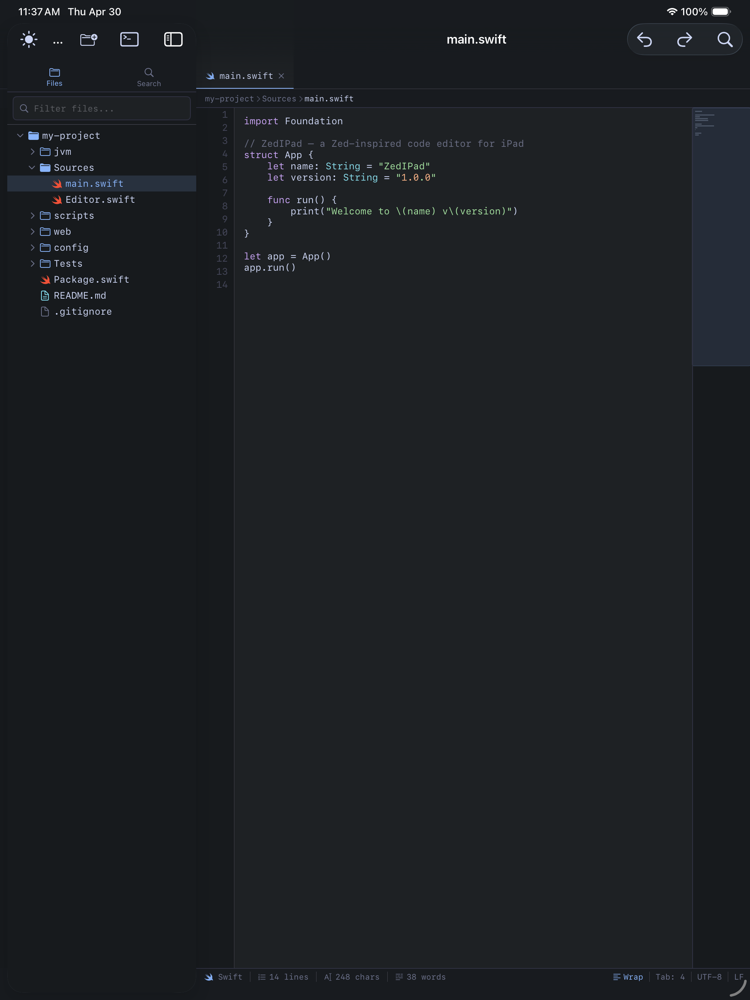
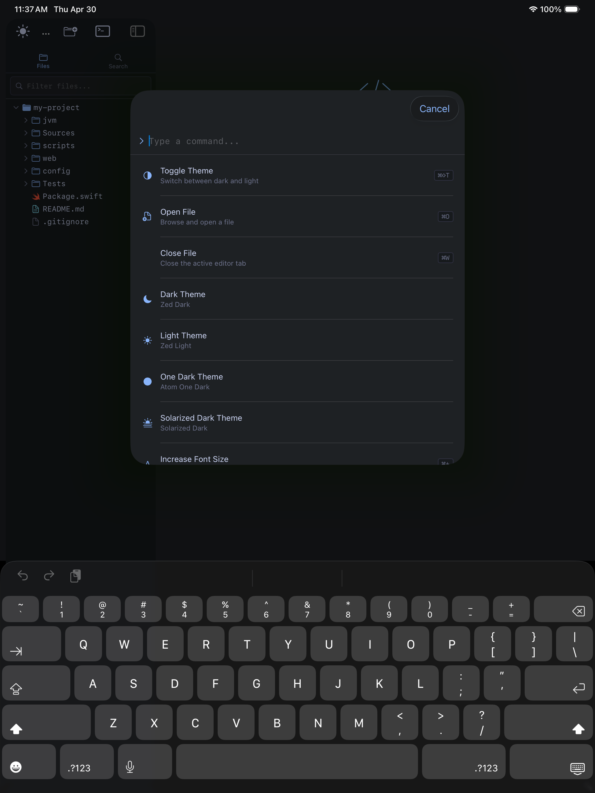
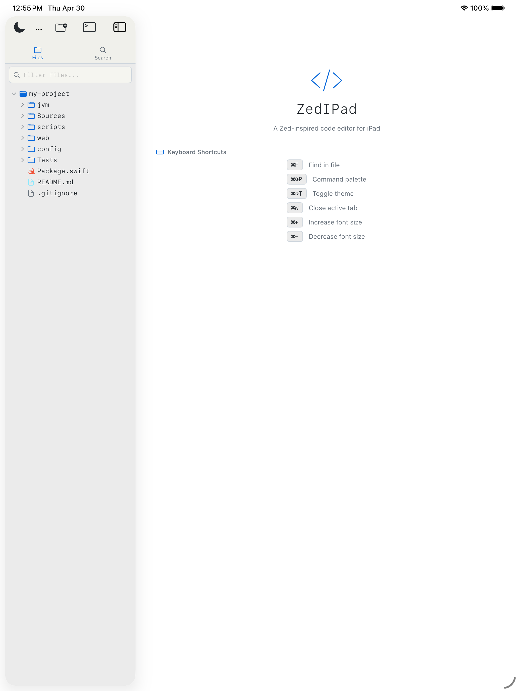

A Zed-inspired code editor built natively for iPadOS. Syntax highlighting, terminal, SSH, Git — all running locally on your device.
Built from the ground up for iPad's large canvas — not a port, not a web app. A native SwiftUI editor that respects your workflow.
21 languages with beautiful color themes. Zed Dark, One Dark, Solarized, and Light — all using real AST-based token coloring.
Powered by swift-syntax and JavaScriptCore. Real Swift AST completions, React hooks, Node.js builtins — zero network required.
Browse, create, rename and delete files directly from your iPad's filesystem and iCloud Drive. Full FileManager integration.
Full VT100 terminal with 24 shell commands. SSH into remote servers, browse files, run git — all without leaving the editor.
git status, commit, diff, log, branch — all from the terminal or dedicated commit panel. Gutter indicators show changed lines.
Regex-powered search across files. Replace with live match highlighting, keyboard shortcut support, and case sensitivity toggle.
Running on a real iPad Pro. Every pixel native SwiftUI.

Syntax Highlighting

Command Palette

Light Theme
Pure Swift, zero JavaScript frameworks, no Electron. Just SwiftUI and Apple frameworks all the way down.
Open source, free to build and run. Join the project on GitHub.